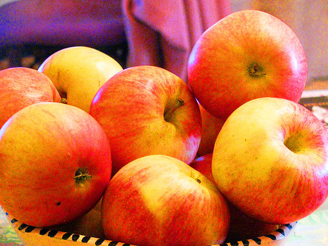
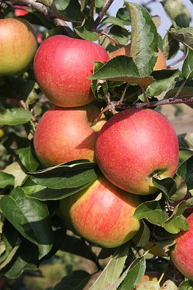

Witaj w świecie jabłek, podróżniku.
Czuj się jak u siebie w domu!
"‘Gala’ jest odmianą jabłek pochodzącą z Nowej Zelandii, która została uzyskana w 1934 r. ze skrzyżowania odmian ‘Orange Red’ i ‘Golden Delicious’." ~ cytowana strona to sad24.pl

Źródło zdjęcia - Wikipedia
"Jonagold – odmiana uprawna jabłoni domowej, pochodząca ze Stanów Zjednoczonych. Otrzymana jako triploid ze skrzyżowania odmian 'Jonathan' i 'Golden Delicious' w 1943 roku w Stacji Doświadczalnej Geneva należącej do Uniwersytetu Cornella." ~ źródło: Wikipedia

Już teraz pobierz ZA DARMO nasz pakiet rysunków jabłek!
Satysfakcja GWARANTOWANA! Nie jest to reklama ani scam czy też próba wyłudzenia danych. Ponadto chcemy zaznaczyć, iż poniższy link nie zawiera żadnych wirusów, spyware, keyloggerów czy też innej niebezpiecznej dla twojego komputera zawartości : - )
POBIERZ JUŻ DZIŚ!